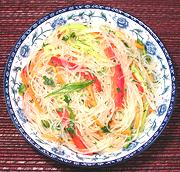

|
Bean Thread & Vegetable SaladPacific Rim - Southeast Asian Style | ||||
| Serves: Effort: Sched: DoAhead: |
6 salad ** 1+ hrs Best |
A cool refreshing salad for warm summer days - and low calorie too! This one has almost no chili bite, unless you add some. It can be made at least a day ahead and refrigerated. | |||
|
5-1/4 8 3 4 2 4 ------ 2 1 3 3 2 2 ------ |
oz oz oz oz oz --- T cl T T T T --- |
Bean Threads (1) Cucumbers (2) Carrots Bell Pepper red Fresno Chili (3) Scallions -- Dressing Cilantro Garlic Fish Sauce. Rice Vinegar Lime Juice Mirin (4) --------------- |
|